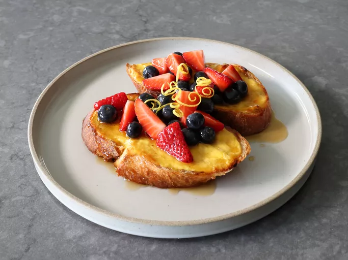

Go back to homepage
Baked Yogurt Custard Toast

Description
For this baked yogurt custard toast, top French bread slices with a quickly-whisked yogurt and egg mixture and
bake. It's that easy! The obvious comparison is to French toast, but the tangy, sweet yogurt custard topping
makes these toasts more reminiscent of a cheese Danish.
Ingredients
- 2 tablespoons soft unsalted butter
- 4 large, thick slices French bread
- ½ cup plus 2 tablespoons Greek yogurt
- 1 tablespoon honey
- ¼ teaspoon vanilla extract
- 1 teaspoon lemon zest
- 1 large egg
- ¼ teaspoon kosher salt
Fruit Topping Ingredients (Optional)
- 1 cup blueberries
- 1 cup quartered strawberries
- ⅓ cup maple syrup
- 1 teaspoon fresh lemon juice
Directions
- Preheat the oven to 400 degrees F (200 degrees C). Line a baking sheet with a silicone mat or parchment.
- Butter one side of bread, and place butter-side-down on the prepared baking sheet.
- Whisk together yogurt, honey, vanilla extract, lemon zest, egg, and salt in a mixing bowl. Spoon custard
mixture over bread, all the way to the edges, and pressing down lightly as you apply, to help the bread
absorb as much as possible. Try to use all the custard.
- Bake in the preheated oven until golden brown, 20 to 25 minutes.
- Meanwhile, stir blueberries, strawberries, maple syrup, and lemon juice together in a bowl; set aside until
needed.
- Serve custard toast immediately topped with fresh fruit.